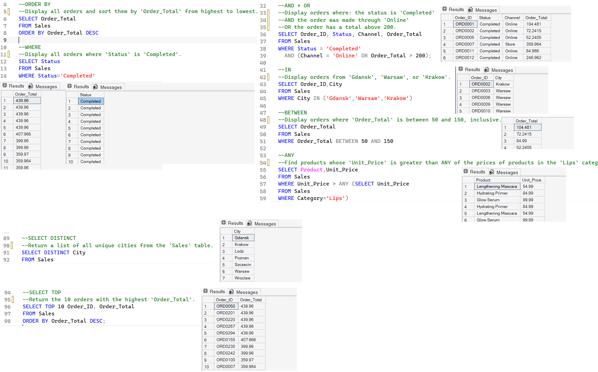
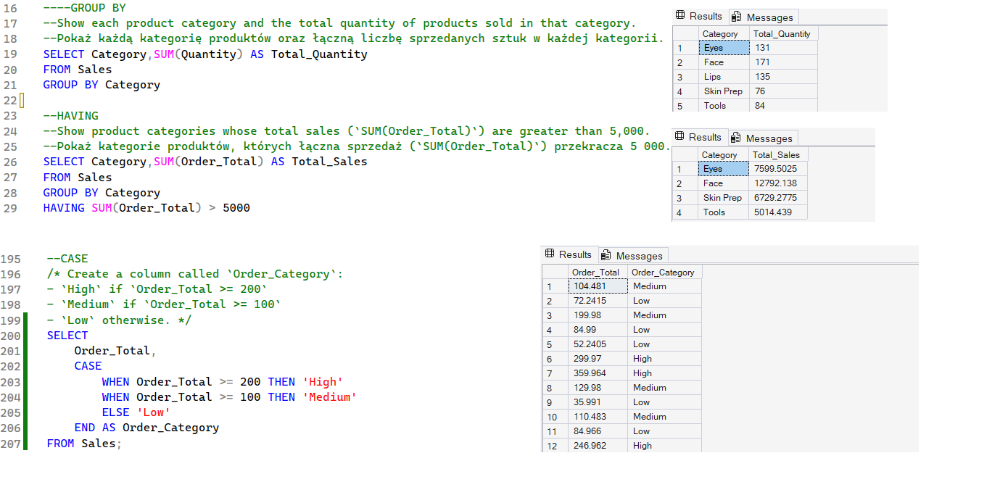
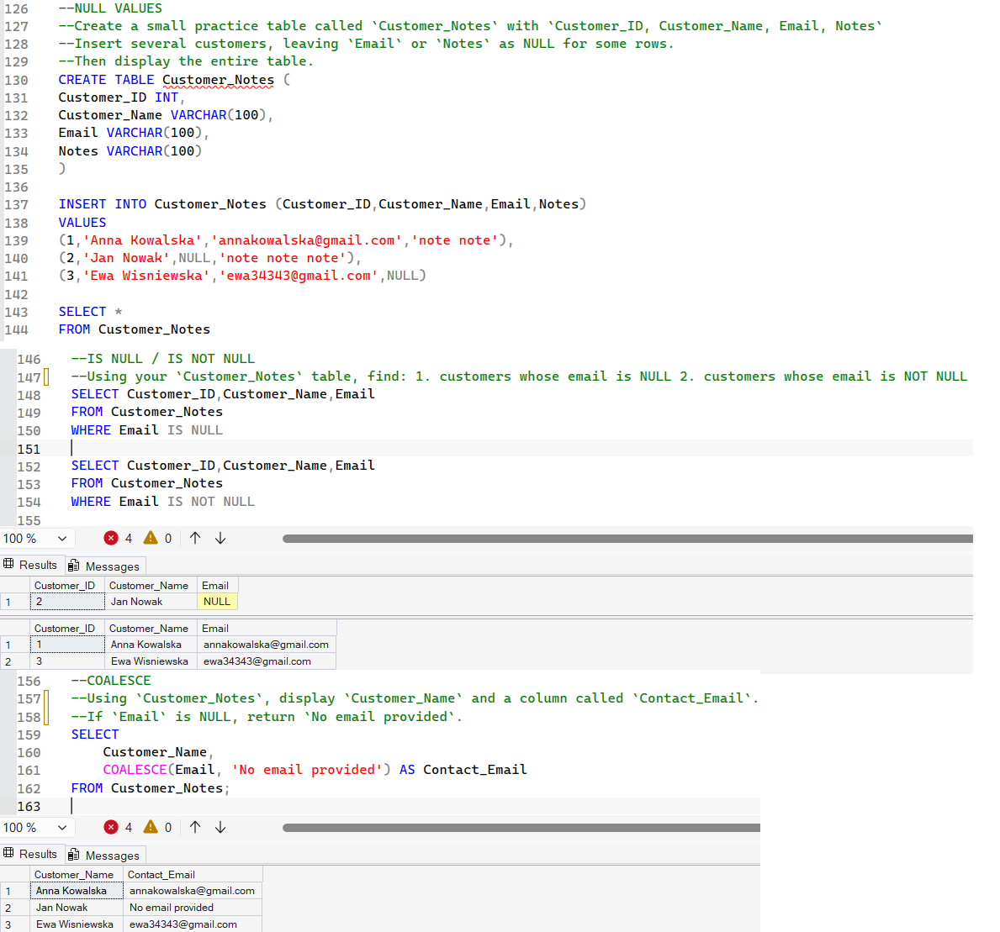
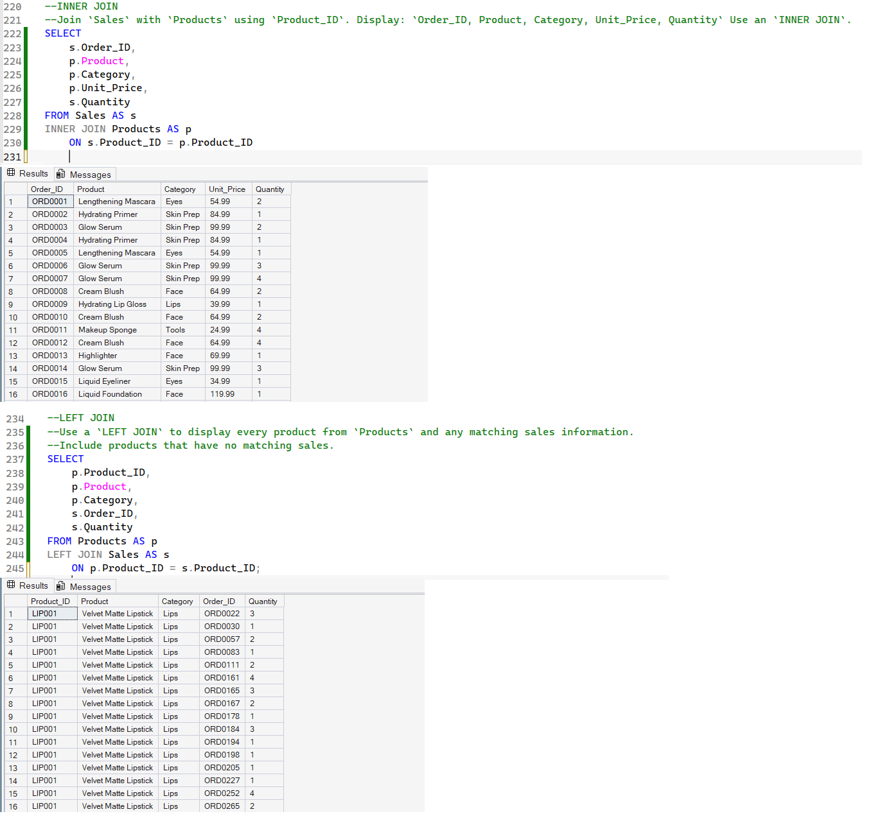
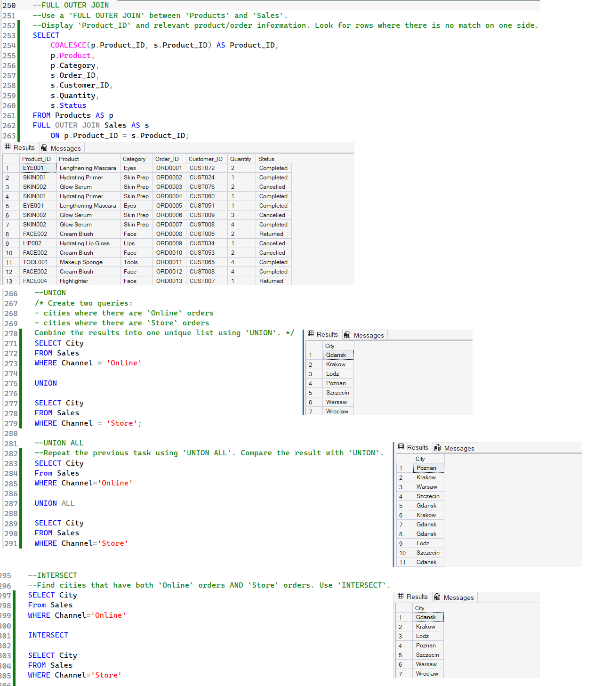
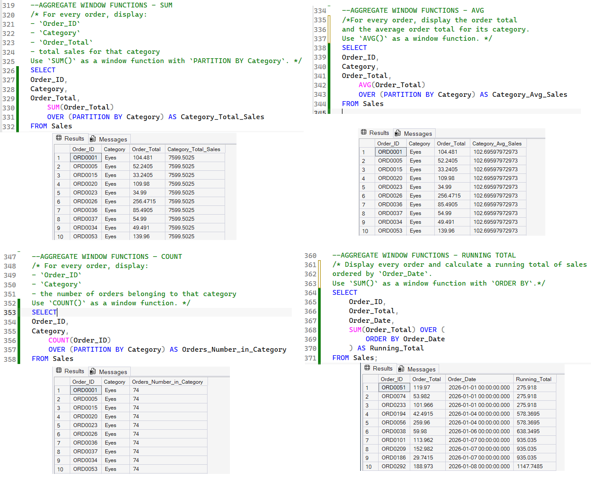
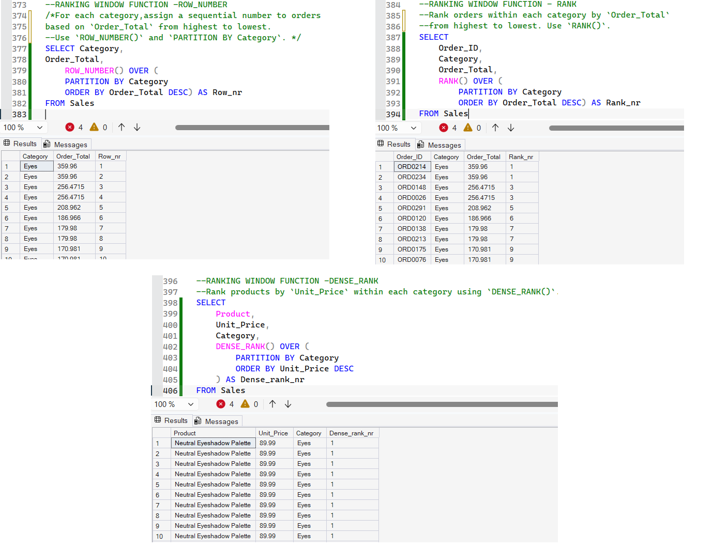
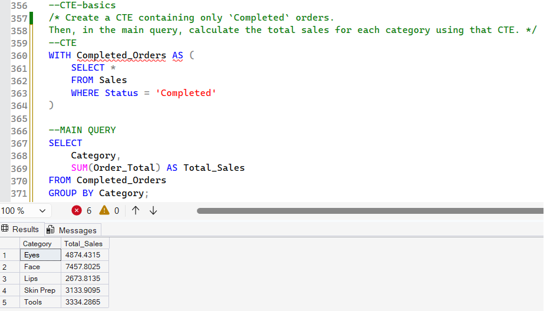
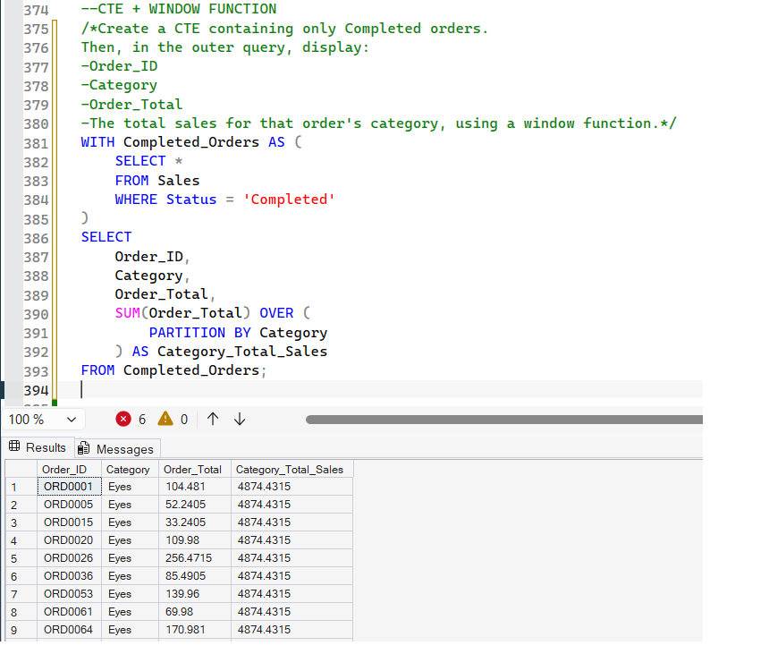
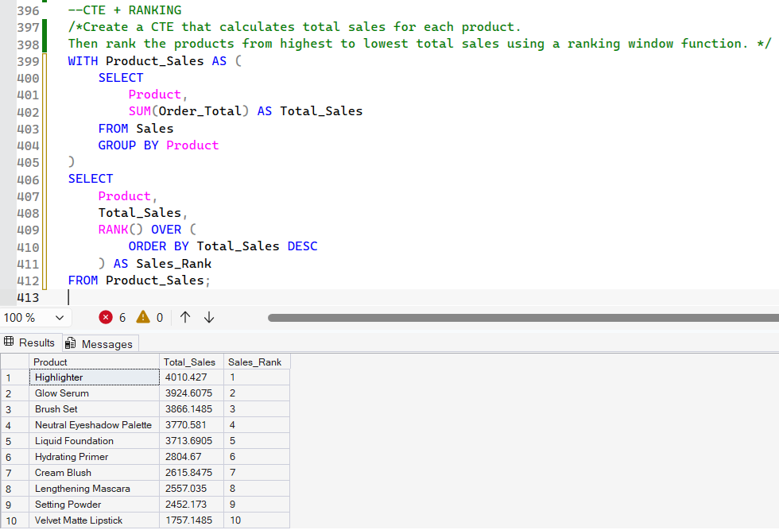

Analiza danych sprzedażowych w SQL SQL Sales Data Analysis
W ramach tego projektu analizowane są dane sprzedażowe internetowego sklepu z kosmetykami przy użyciu systemu SQL Server.
This project explores sales data from an online cosmetics store using SQL Server.
Dane zebrane w tabelach Sales i Products obejmują ponad 300 zamówień zarejestrowanych w okresie od stycznia do września 2026 roku i bazują na pliku programu Excel zawierającym informacje o zamówieniach oraz produktach.
The Sales and Products tables contain over 300 orders recorded between January and September 2026. The data is based on an Excel file containing information about orders and products.
Celem projektu jest praktyczne wykorzystanie technik tworzenia zapytań SQL w odniesieniu do danych sprzedażowych — od podstawowego filtrowania danych, aż po bardziej zaawansowane zapytania analityczne i raportowanie wyników sprzedaży.
The goal is to apply SQL querying techniques to sales data, ranging from basic data filtering to more advanced analytical queries and sales reporting.
Narzędzia: SQL Server · T-SQL · JOIN · CTE · Funkcje okna Tools: SQL Server · T-SQL · JOINs · CTEs · Window Functions
01 — Filtrowanie i sortowanie danych 01 — Data Filtering and Sorting
Wybieranie odpowiednich rekordów, stosowanie wielu warunków, wyszukiwanie nazw produktów oraz identyfikowanie zamówień o wysokiej wartości. Zapytania wykorzystują między innymi filtrowanie, sortowanie, agregację i instrukcje warunkowe. Selecting relevant records, applying multiple conditions, searching for product names, and identifying high-value orders. The queries use filtering, sorting, aggregation, and conditional logic.
Wykorzystane techniki: ORDER BY, WHERE, SELECT DISTINCT, SELECT TOP, AND, OR, IN, BETWEEN, ANY, GROUP BY, HAVING, CASE, IS NULL, IS NOT NULL, COALESCE Techniques: ORDER BY, WHERE, SELECT DISTINCT, SELECT TOP, AND, OR, IN, BETWEEN, ANY, GROUP BY, HAVING, CASE, IS NULL, IS NOT NULL, COALESCE



02 — Łączenie danych (JOIN) i operacje na zbiorach 02 — Joins and Set Operations
Łączenie danych dotyczących produktów i sprzedaży oraz porównywanie wyników w różnych kanałach sprzedaży. Tabele Sales i Products są łączone przy użyciu INNER JOIN, LEFT JOIN oraz FULL OUTER JOIN. Projekt obejmuje również operacje UNION, UNION ALL i INTERSECT. Combining product and sales data and comparing results across sales channels. The Sales and Products tables are joined using INNER JOIN, LEFT JOIN, and FULL OUTER JOIN. The project also covers UNION, UNION ALL, and INTERSECT.
Wykorzystane techniki: INNER JOIN · LEFT JOIN · FULL OUTER JOIN · UNION · UNION ALL · INTERSECT Techniques: INNER JOIN · LEFT JOIN · FULL OUTER JOIN · UNION · UNION ALL · INTERSECT


03 — Funkcje okna 03 — Window Functions
Obliczanie wskaźników na poziomie kategorii, sum narastających oraz rankingów produktów i zamówień. Funkcje okna umożliwiają wykonywanie obliczeń na powiązanych zestawach wierszy bez utraty szczegółowości danych. Calculating category-level metrics, running totals, and rankings of products and orders. Window functions make it possible to perform calculations across related rows while retaining row-level detail.
Wykorzystane techniki: SUM() OVER · AVG() OVER · COUNT() OVER · sumy narastające · ROW_NUMBER() · RANK() · DENSE_RANK() Techniques: SUM() OVER · AVG() OVER · COUNT() OVER · Running Totals · ROW_NUMBER() · RANK() · DENSE_RANK()


04 — Wyrażenia tabelaryczne (CTE) 04 — Common Table Expressions (CTEs)
Konstruowanie bardziej złożonych zapytań z wykorzystaniem CTE (WITH). Dzielenie logiki na czytelne etapy oraz łączenie CTE z funkcjami okna w celu przeprowadzania wieloetapowej analizy danych sprzedażowych. Building more complex queries using CTEs (WITH). Breaking query logic into readable steps and combining CTEs with window functions to perform multi-step sales data analysis.
Wykorzystane techniki: WITH · CTE · Funkcje okna Techniques: WITH · CTEs · Window Functions



Wybrane wnioski biznesowe Selected Business Insights
Przykładowe wyniki analizy zagregowanych danych sprzedażowych. Selected results from the analysis of aggregated sales data.
1. Sprzedaż według kategorii produktów 1. Sales by Product Category
- Face — 12 792,14
- Eyes — 7 599,50
- Skin Prep — 6 729,28
- Tools — 5 014,44
- Lips — 4 908,24
Analiza sprzedaży według kategorii wykazała, że najwyższą łączną wartość sprzedaży osiągnęła kategoria Face (12 792,14), natomiast najniższą — Lips (4 908,24). Cztery z pięciu kategorii przekroczyły próg sprzedaży wynoszący 5 000. Wyniki wskazują na zróżnicowanie wartości sprzedaży pomiędzy kategoriami.
Face recorded the highest total sales value (12,792.14), while Lips recorded the lowest (4,908.24). Four out of five categories exceeded the sales threshold of 5,000. The results indicate differences in total sales value across product categories.
2. Sprzedaż poszczególnych produktów 2. Sales by Individual Product
Ranking produktów według zagregowanej wartości sprzedaży wskazał Highlighter jako produkt z najwyższym wynikiem (4 010,43), a Makeup Sponge jako produkt z najniższym wynikiem (1 148,29). Wysokie pozycje zajęły również Glow Serum i Brush Set. Zestawienie pozwala wskazać produkty o najwyższej i najniższej wartości sprzedaży w analizowanym zbiorze.
Ranking products by aggregated sales value identified Highlighter as the top-performing product (4,010.43) and Makeup Sponge as the lowest (1,148.29). Glow Serum and Brush Set also ranked highly. The comparison identifies the products with the highest and lowest sales values in the dataset.
3. Średnia wartość sprzedaży według kategorii 3. Average Sales Value by Category
Najwyższa średnia wartość sprzedaży wystąpiła w kategorii Skin Prep (156,49), a najniższa w kategorii Lips (72,18). Analiza pozwoliła zidentyfikować różnice w średniej wartości analizowanej miary pomiędzy kategoriami.
Skin Prep had the highest average sales value (156.49), while Lips had the lowest (72.18). The analysis identified differences in the average value of the metric across product categories.